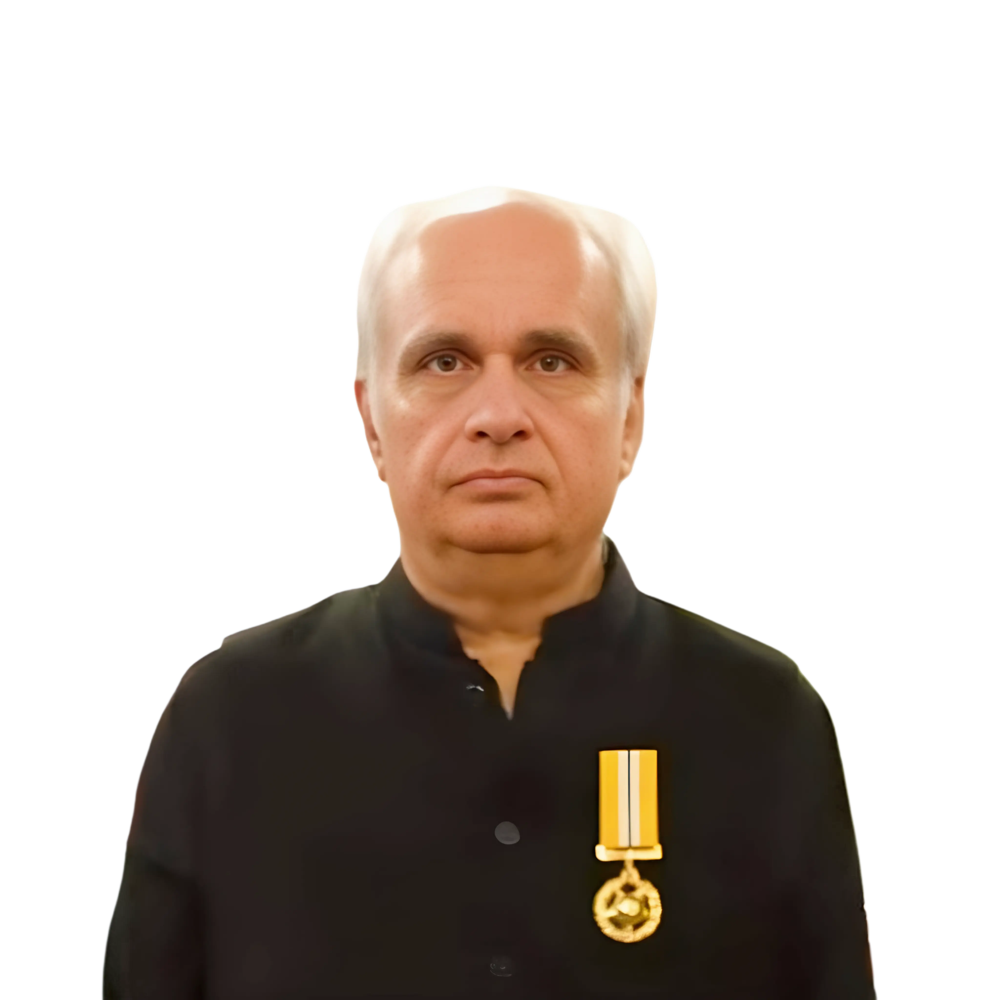

Become a Certified Agentic AI Architect in Live Online Classes
Train with expert instructors through Zoom and build Digital Full-Time Equivalents that work 24/7, powered by natural language. Learn to design, build, and deploy production Agent Factories, with classes available in English, Urdu & Hindi from anywhere worldwide.
Prepares you for PCAO-F and PCAR-F, the Panaversity exams that qualify you for the FDE Internship Program and Anthropic's official Claude Certification. Alongside them you build DSoR, so you finish with the credential and the system to show for it.
Live classes with real instructors, Zia Tutor AI that remembers your progress, the Agent Factory blueprint for building real agent systems, and a clear path to official Anthropic certification, all in one complete learning experience.
1Step 1
Live online classes
The moment you enroll, you join live expert-led Zoom sessions conducted in English, Urdu & Hindi. Weekly classes cover everything from foundations to advanced production systems. Attend from anywhere in the world, ask questions in real time, and catch up on recordings whenever you need.
The Agent Factory is the spec-driven blueprint for building Digital FTEs: AI workers that perform structured knowledge work inside real organizations at scale. The entire curriculum is built around this paradigm. Start with the book.
Your personal learning agent, built as a digital twin of Zia Khan and running inside the AI agent you already use, including Claude. It teaches from the Agent Factory, remembers where you stopped, continues across sessions and weeks, checks what you understood, and tells you what to study next.
Pass Panaversity's proctored PCAO-F and PCAR-F exams to qualify for the FDE Internship Program, then sit Anthropic's official CCAO-F and CCAR-F certifications, with Panaversity assisting your registration. Every credential is proctored and independently verifiable: proof a stranger can check in seconds. Alongside the exams you build DSoR, so you finish with the credential and the system.
Animated path: live classes, Agent Factory, Zia Tutor AI, then your credential.
While you study, build
Certificates prove what you know. A project proves what you can build.
The world is about to be run by AI workers, and very few people can build them safely. You can be one of them.
An AI worker is software that does real jobs inside a company, such as issuing a refund, updating a customer record or placing an order, not just answering questions.
You would not hand a new accounts clerk the bank password and say "pay whatever looks right." You would set limits, have someone sign off on anything large, and keep a record of what they did. AI workers need the same care. Almost nobody builds that part. That is DSoR, the Data System of Record.
DSoR is the checkpoint an AI worker has to pass through before it can touch anything real: a payment, a customer record, an order. The AI asks. DSoR decides. It is the governed layer between an AI worker and a company's real systems. DSoR never takes the agent's word for anything. It checks for itself.
KSoR · Knowledge System of RecordThe rulebookWhat it may know.
DSoR · Data System of RecordThe checkpointWhat it may do.
You write the rule once in KSoR. DSoR makes sure every action followed it, and can show you which version of the rule it followed. DSoR is the twin of KSoR: KSoR governs what an AI worker may know; DSoR governs what it may do. A policy lives in KSoR, DSoR enforces it, and every action traces back to the exact policy version behind it.
From the day you pass PCAO-F, the first exam on the path, you build alongside your study. Our team has started building and the open specification is ready. You build DSoR with us in 52 baby steps, one new idea at a time, using Claude Code, Anthropic's AI coding tool.
Step 00 · Live now52 steps
Step 00 is live, and it assumes you know none of this. Clone the repo and begin today.
Companies will not pay for people who can only chat with AI. They will pay for people who can put AI to work inside real systems, safely, and prove it. A Claude certification tells an employer you understand. DSoR shows them you can build. Very few people in the world will have both.
Four checks, every time
Sarah works in Billing. An AI worker handles refunds for her. Here is one of its requests, moving through DSoR.
AI workerRefund customer #4471 — $5,000
1
Who is asking?
The AI worker, acting for Sarah in Billing, using her authority and not its own.
Checks who is asking, and under whose authority
PASS
2
Does a human need to approve this?
Refunds over $1,000 do. Paused until Sarah's manager signs off.
Waits for a human's approval when the rules demand it
PAUSED
3
Has this already happened?
No. This is what stops a glitch refunding the same customer twice.
Makes sure nothing happens twice
PASS
4
Write down what happened
Who, what, when, and which rule allowed it.
Keeps the evidence
PASS
Only if all four pass, the request reaches your real systems: Payments · Customer records · Orders.Result: Refund issued once Sarah's manager approved it. Every step recorded, and you can see which rule allowed it.
Claude Certification Pathway
The route from Panaversity to an official Anthropic credential
Details come from the FAQ on panaversity.org. Check the official certifications page for current status and fees.
PCAO-FPanaversity · Associate
PCAR-FPanaversity · Architect
FDE Internship ProgramThe bridge
CCAO-FAnthropic · Associate
CCAR-FAnthropic · Architect
Stage one
Panaversity qualification
Sit PCAO-F (Associate Foundations) first, then PCAR-F (Architect Foundations). Both are proctored by Panaversity with a 720/1000 passing score.
The bridge
FDE Internship Program
Passing both qualifies you for the Panaversity FDE Internship Program. External candidates who pass both exams also qualify. You do not need to be enrolled in a Panaversity course.
Stage two
Anthropic certification
Sit CCAO-F, then CCAR-F, proctored through Pearson VUE. Exam fees are paid directly to Anthropic. Panaversity assists qualifying internship participants with registration, at no additional fee.
Panaversity exams · 720/1000 to pass
Exam
Name
Status
PCAO-F
Certified Associate: Foundations (aligned to CCAO-F)
Registration opening soon
PCAR-F
Certified Architect: Foundations (aligned to CCAR-F)
Available now
PCDV-F
Certified Developer: Foundations (aligned to CCDV-F), optional
Available now
PCAR-P
Certified Architect: Professional (aligned to CCAR-P)
Planned
Anthropic exams · per attempt
Exam
Name
Fee
Questions
CCAO-F
Claude Certified Associate: Foundations
$99
60
CCAR-F
Claude Certified Architect: Foundations
$125
60
CCDV-F
Claude Certified Developer: Foundations
$125
53
CCAR-P
Claude Certified Architect: Professional
$175
63
Panaversity students get two free attempts per exam. A third or later attempt is charged at a fee to be announced. Every Anthropic exam runs 120 minutes with a 720/1000 cut score. For the recommended FDE pair (CCAO-F + CCAR-F) the direct Anthropic cost is $224 before partner discounts. Full details on the certifications page.
Curriculum & certifications
The Agentic AI Architect Program
Five courses that take engineers from Claude Code and context engineering through building Agent Factories and deploying them at cloud scale, and prepare you for the PCAO-F and PCAR-F certification exams.
Level 1
AI-101Course 1
AI-Driven Development, Claude Code, and OpenClaw Fundamentals
Your entry point into the Agent Factory paradigm. Learn why AI is non-negotiable, master Claude Code as your primary development tool, build your first OpenClaw applications, and begin developing critical thinking skills that separate you from AI-dependent practitioners.
Context Engineering, Spec-Driven Development, and Advanced Claude Code
Master the art of context engineering and spec-driven development, the methodology that makes AI agents reliable. Build agent workflow primitives for file processing, structured data, and version control. Complete Level 1 certification.
The programming quarter. Eight phases take you from setting up the development workbench through type-driven development, testing, debugging, OOP, real-world Python, CLI applications, and production systems. In parallel, complete the remaining Thinking is the Curriculum chapters and assemble your Thinking Portfolio.
The construction quarter. Build production-grade Agent Factories using the Claude Agent SDK and OpenAI Agents SDK. Master MCP server development, FastAPI integration, and RAG pipelines. This quarter is the construction half of the program: turning architectural choices into working agent systems.
The deployment quarter. Take your Agent Factories from development to production at cloud scale. Master containerisation, orchestration, event streaming, continuous deployment, and multi-cloud strategies.
The opening two sessions of AI-101, recorded live: the full program walkthrough and the student Q&A that came with it. No sign-up and no payment required. See how a class actually runs before you decide.
Panaversity pairs academic direction with hands-on engineering leadership, so learners move from concepts to production-ready agentic systems.
Academic leadership

Zia Khan
CEO Panaversity
Nation-Transforming Social Entrepreneur
Faculty model: strategy from academic leadership, execution from builders, and feedback from instructors who work close to student projects.
Research ExcellenceSystem ArchitectureReal-World Projects
Faculty bench
Specialists behind the learner experience
Architecture, full-stack implementation, and applied AI practice come together through faculty who build, teach, and mentor from real project experience.
Most AI tutors answer the question in front of them. Zia Tutor AI also understands where that question belongs in your learning journey. It greets you by name, picks up where you left off, and tells you what to study next.
It lives inside the AI agent you already use, including Claude. Add one connector and one skill, authorize once, and begin learning. There is no separate app to install. Your AI agent is the runtime.
It keeps your learning record: what you studied, what you understood, and what you should learn next.
Grounded in the book
Every lesson comes from the governed Agent Factory System of Record, not from random internet knowledge.
Shaped around you
Your profile (your goals, your background, and how you like to learn) shapes every lesson. You can see and change it any time.
Start in about two minutesThree steps, all inside claude.ai.
1
Add the connector
In claude.ai, add Zia Tutor AI as a custom connector and sign in with your Panaversity account. This gives you your own learner record.
2
Add the skill
Download the Zia Tutor AI skill and upload the zip to Skills in claude.ai. This is how Claude knows when to bring Zia in.
3
Start learning
Open a new chat with Opus 5 or Sonnet 5 and type /zia-tutor-ai. Zia says hello by name and picks up where you stopped.
Why it matters
Zia Tutor AI is a digital twin in action: Zia Khan's teaching identity, method, and governed knowledge, encoded as an agent. It is the same kind of system Panaversity students learn to build, and every profession can eventually have its own expert twin.
Core concept
What is a Digital FTE?
Digital FTEs, also called Digital Workers, are reliable AI agents designed to perform structured knowledge work continuously inside real organizational environments. Not just a model with a prompt. A system.
Domain expertise, explicit specifications, engineering architecture and human oversight all feed one Digital FTE.
Four parts of one system
Domain Expertise
Deep knowledge of the business domain, encoded as structured context the agent draws on for every decision.
Explicit Specifications
Precise instructions, constraints, and quality standards: the spec the agent follows, not vague prompts.
Engineering Architecture
Production-grade infrastructure, with retry logic, state management, and orchestration that makes execution reliable.
Human Oversight
Continuous verification loops. The professional judgment no model can replace: review, audit, and ship.
Not automation. Scalable assets.
Digital FTEs are not only a technical construct, they are an economic one. They allow organizations to package expertise, reduce execution bottlenecks, and create new revenue streams. Built well, they don't merely automate tasks. They become scalable assets.
Specs, not vague prompts
The Agent Factory paradigm is a shift from writing software to manufacturing AI employees. Students learn to design, build, and deploy Digital Full-Time Equivalents that work 24/7, powered by natural language.
The Agent Factory paradigm
AI Executes. Professionals Judge.
The paradigm shift from writing software to manufacturing AI employees. Panaversity teaches the 10-80-10 rhythm, the operating model behind every Digital Full-Time Equivalent you will build in this program.
About Panaversity
Stay in charge of the AI shift, not sidelined by it
Panaversity exists to help professionals stay in charge of the AI shift, not be sidelined by it. Built around Zia Khan's Agent Factory vision, our live online classes teach students to turn domain knowledge into Digital Full-Time Equivalents using specs, Claude Code, agent SDKs, and cloud deployment. The goal is practical: build agent factories you can trust, verify, and ship.
20,868+Active Students
7+Active Programs
4+Global Reach
40+Expert Instructors
Trusted AI ecosystem
Trusted Across Pakistan's Leading AI Programs
PIAIC
PIAIC helped bring AI and cloud education to learners across Pakistan. Many students who know this ecosystem come to Panaversity ready for the next step: agentic AI, specs, and Digital FTEs.
Operation Badar
Operation Badar laid early groundwork for community-driven tech learning. Panaversity builds on that teaching culture with a focused path into AI-native software and agent factories.
GIAIC
GIAIC has brought large-scale AI training to learners in Sindh. Panaversity continues that momentum for students who want practical agentic AI skills they can build, verify, and ship.
Testimonials
Success Stories From Our Graduates
"Panaversity empowered me to turn ideas into reality. The hands-on AI training and expert guidance shaped my career, helping me excel in both entrepreneurship and innovation."
"The mentorship and AI-focused projects at Panaversity strengthened my foundation, enabling me to excel in academic research and prepare for exciting professional challenges."
"Panaversity advanced my career by equipping me with hands-on AI skills. The practical learning experience prepared me to tackle challenges and deliver innovative tech solutions."
"Panaversity's flexible program and advanced AI program enhance my research and gain practical skills, preparing me to excel in both academic and tech-focused fields."
FAQs
Top Answered Questions
What is the Agentic AI Architect Program?
Panaversity's Agentic AI Architect Program is a professional program that takes you from AI-driven development fundamentals through building and deploying Agent Factories at cloud scale.
The curriculum runs across four course levels (AI-101 → AI-451) and covers Claude Code, OpenClaw, context engineering, spec-driven development, programming in the AI era, the Claude Agent SDK, MCP, FastAPI, RAG, Docker, Kubernetes, Kafka, and multi-cloud deployment.
The program prepares you for the Claude Certification Pathway: Panaversity's PCAO-F and PCAR-F exams, which qualify you for the FDE Internship Program, and then Anthropic's official CCAO-F and CCAR-F certifications.
How is the Agentic AI Architect Program structured?
The curriculum is organised into four progressive course levels:
Level 1: AI-101 and AI-151 — Claude Code, OpenClaw, context engineering, spec-driven development, and agent workflow primitives. 2 courses.
Level 2: AI-251 — learn to think and program in the AI era through types, tests, debugging, OOP, CLI tools, concurrency, and production systems. 1 course.
Level 3: AI-321 — build Agent Factories with the Claude Agent SDK, MCP, FastAPI, and RAG. 1 course.
Level 4: AI-451 — deploy Agent Factories with Docker, Kubernetes, Kafka, CI/CD, and multi-cloud. 1 course.
Certification is separate from the course ladder — see the Claude Certification Pathway above.
Do I need to be a programmer to join?
A programming background helps. The Agentic AI Architect Program is built for engineers and developers — it covers Python, Claude Code, the Claude Agent SDK, FastAPI, Docker, Kubernetes, and cloud deployment.
That said, the pathway does not start with code. PCAO-F is taken first precisely because it is the better opening checkpoint for learners who do not yet have deep development experience — it tests judgment about Claude's output, workflow fit, and governance rather than implementation. PCAR-F then adds system design, and the build-focused exam (PCDV-F) is optional.
Are classes live and in which languages?
Yes. All classes are live online through Zoom with expert instructors. Sessions are available in English, Urdu, and Hindi and you can join from anywhere worldwide.
Alongside live classes, students work on hands-on projects, parallel tracks (like OpenClaw and Learn to Think), and hackathons throughout the curriculum.
Why does the program combine thinking and programming?
Because using AI tools effectively is not only about prompts or frameworks. You also need the judgment to know when AI is wrong, the ability to specify what should be built, and the discipline to verify results.
That is why Thinking is the Curriculum (Part 0) runs as a parallel track across the program — covering asking better questions, detecting broken reasoning, systems thinking, reasoning from first principles, and deciding under uncertainty. The governing principle: AI Executes, Professionals Judge.
What is the Agent Factory paradigm?
The Agent Factory is a paradigm shift from writing software to manufacturing AI employees. Students learn to design, build, and deploy Digital Full-Time Equivalents (Digital FTEs) that work 24/7.
The program is anchored by the 10-80-10 rhythm: 10% human intent (the spec, constraints, domain judgment), 80% agent execution (computation, drafting, analysis), and 10% human verification (the professional call no model can make).
What is Claude Code and why is it central to the program?
Claude Code is Anthropic's engineering interface for working with Claude. In this program it is used as the primary development tool across every level — from Level 1 foundations through cloud deployment at Level 4.
Students learn to operate it safely, structure CLAUDE.md instructions, manage context, use plan mode and slash commands, build Agent Skills, and integrate it into CI/CD workflows.
Claude Code Configuration is also 20% of the CCAR-F exam, so this work counts directly toward certification.
What is the Model Context Protocol (MCP)?
Model Context Protocol (MCP) is an open standard for connecting AI systems to tools, data sources, and external services. In this program, MCP is covered deeply at Level 3 (AI-321) where students build MCP servers and connectors, define tool boundaries, and expose resources and prompts to agents.
MCP is an exam domain in both Foundations credentials — Tool Design and MCP is 18% of CCAR-F, and Tools and MCPs is 10.6% of CCDV-F.
What is spec-driven development?
Spec-driven development means writing the intended behavior clearly enough that implementation, testing, and verification can follow from the specification instead of from vague instructions. It is the methodology that makes AI agents reliable in production.
At Level 1 (AI-151), students master context engineering, the Seven Principles of production-grade agent systems, and writing executable specifications that agents can follow.
What is the Claude Certification Pathway?
It is the route from studying with Panaversity to holding an official Anthropic credential. It has two stages:
Stage One — Panaversity qualification: sit PCAO-F (Associate Foundations) first, then PCAR-F (Architect Foundations). Both are proctored by Panaversity with a 720/1000 passing score.
The bridge: passing both qualifies you for the Panaversity FDE Internship Program.
Stage Two — Anthropic certification: sit CCAO-F, then CCAR-F, proctored through Pearson VUE.
Why do I need the internship to sit the Anthropic exams?
Because Anthropic's exams have an access requirement. Claude certification registration runs through the Anthropic Partner Academy and requires an eligible organisational account. Personal email addresses are not accepted, and there is currently no individual sign-up route.
Passing PCAO-F and PCAR-F qualifies you for the Panaversity FDE Internship Program, and Panaversity assists qualifying internship participants with registration for the official exams.
There is no additional fee for qualifying participants. External candidates who pass both exams also qualify — you do not need to be enrolled in a Panaversity course.
What are the Panaversity certification exams?
Panaversity's certification framework contains four proctored exams, each aligned to a matching Anthropic credential and each using a 720/1000 passing threshold:
PCAR-F — Panaversity Certified Architect: Foundations (aligned to CCAR-F). Available now.
PCDV-F — Panaversity Certified Developer: Foundations (aligned to CCDV-F). Available now, optional.
PCAR-P — Panaversity Certified Architect: Professional (aligned to CCAR-P). Planned.
For the Vertical FDE path, the two you need are PCAO-F first, then PCAR-F. Associate comes first because its heaviest section is evaluating and validating Claude's output — you have to be able to judge a result before you can design a system that produces it. PCDV-F is an optional extra credential, not a step on the path.
What do the Panaversity exams cost, and how many attempts do I get?
Panaversity students get two free attempts per exam. A third or later attempt is charged at a fee to be announced.
You do not have to study with Panaversity to sit the exams. External candidates pay only the proctoring fee, currently TBA.
The two-attempt policy is deliberate: one attempt creates too much pressure, and unlimited attempts turn the exam into trial and error. Take the free sample tests before you spend an attempt — they cost nothing and do not count against you.
What do the Anthropic exams cost?
Anthropic's four credentials are priced per attempt, before any applicable partner discount:
CCAO-F — Claude Certified Associate: Foundations — $99, 60 questions
CCAR-F — Claude Certified Architect: Foundations — $125, 60 questions
CCDV-F — Claude Certified Developer: Foundations — $125, 53 questions
CCAR-P — Claude Certified Architect: Professional — $175, 63 questions
Every exam runs 120 minutes with a 720/1000 cut score. For the recommended FDE pair (CCAO-F + CCAR-F) the direct Anthropic cost is $224 before partner discounts. Exam fees are paid directly to Anthropic and are not bundled into Panaversity tuition — the Panaversity stage is free for students within the stated attempt policy.
How do retakes and renewals work?
Retakes: you may make up to four attempts at the same Anthropic exam in a rolling 12 months. The waits are 14 days after the first failure, 30 after the second, and 90 after the third. Each attempt costs the full fee. Failing one exam does not stop you registering for a different one.
Renewal: each Anthropic credential lasts 12 months, and on-time renewal is free through a non-proctored refresher. Let it lapse and you must retake the full proctored exam at full price — put the renewal date in your calendar the day you pass.
Rescheduling: free up to 24 hours before your appointment. Inside that window you forfeit the fee.
Is an Anthropic course badge the same as a certification?
No, and the difference matters. Anthropic Academy courses are free and self-paced, and completing one can earn a course badge — there is no proctor, no fee, and no identity check.
The Claude Certification Program is the four proctored exams: 53 to 63 scored items, government photo ID, $99 to $175 per attempt, and a Credly digital credential on passing.
Both are useful, and the free Academy courses are good preparation. But do not write "Claude Certified" on your CV until you have passed the Pearson VUE exam.
Why is cloud deployment part of an agentic AI program?
Because useful agent systems are not finished when they work locally. They need to run reliably for real users, integrate with other services, scale under load, and be monitored in production.
Level 4 (AI-451) therefore covers Docker, Kubernetes, Kafka, CI/CD pipelines, multi-cloud deployment across AWS, GCP, and Azure, production monitoring, enterprise security, and cloud cost optimisation for agent infrastructure.
Start Building Your AI Workforce Today
Join thousands of builders creating Digital Full-Time Equivalents without writing code. Our expert-led courses teach you Spec-Driven Development and hands-on agent architecture. Learn to build AI employees that work 24/7, delivering consistent results and amplifying your career impact. Start from zero, no prerequisites required.